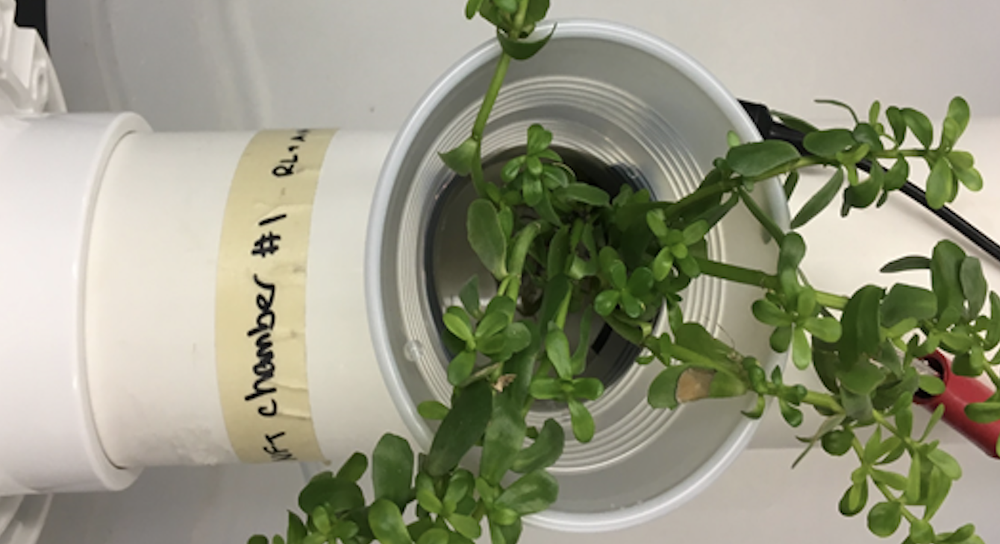

Hi, I'm Richard Lee!
Currently, I'm an undergraduate at Columbia studying EE (amongst other things), conducting research on neural interfaces, and building VR environments for autonomous spaceflight. I'm also aiding development of multiple startups, building no-code tools at Cleveland Clinic, and investing with Bowery Capital.
In the past, I:
- Computationally modeled 1000ft wells (now built!) at Princeton School of Architecture w/ Oak Ridge National Labs
- Helped lead youth volunteering through the Red Cross' Greater New York Youth Council
- Worked on several startups - including one recognized by Forbes
- Built (and patented!) hydroponic cells capable of purifying water and generating clean energy 
- Conducted and presented bioinformatics research at the Feinstein Insitute @ Northwell Health
- Marched, ran, and rowed for a couple thousand miles
- And... went to too many concerts [pre-COVID19]:
Thanks, & talk soon.